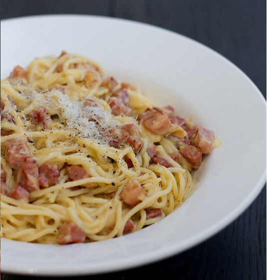

Trühvlipasta retsept
| Italpasta |
350 g |
| peekon |
200 g |
| munakollane |
4 tk |
| Riivjuust |
100 g |
- Keeda makaronid rohkes soolases vees al dente.
- Lõika peekon väikesteks kuubikuteks.
- Prae kuumal pannil oliiviõlis krõbedaks.
- Pane munakollased suurde kaussi.
- Klopi munad vispliga lahti.
- Sega juurde riivitud juust, maitsesta pipraga.
- Kurna spagetid ja lisa kohe muna-juustusegu hulka.
- Sega läbi ja lisa juurde lihakuubikud.
- Puista peale riivitud juustu ja pipart.
- Naudi!

Retsept